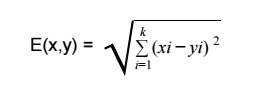
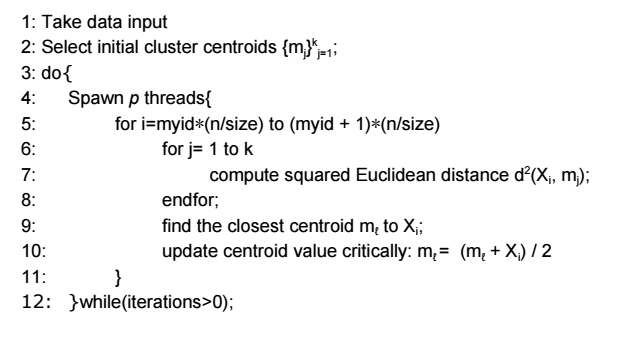
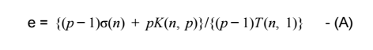

High Dimensional
Data Clustering
Shaleen Kumar Gupta (201301429)
Visharad Bansal (201301438)
Dhirubhai Ambani Institute of Information and Communication Technology
Gandhinagar
Problem Statement
Cluster a high dimensional unlabelled data set.
Assign membership to each of the data points.
Input and Output
-
Our Benchmark data set consisted of a 70MB .csv file containing 40,000 data points, each having 97 dimensions.
-
However, we have varied the size of the input file from 17.5 MB to 1.2G GB
to test the efficiency of the algorithm.
-
We implemented our algorithm on an Intel Cluster having 16 cores using the OpenMP Multi threading Library. Performance was measured on two metrics, the Dunn index of the cluster and the Root Mean Squared error.
We provide a High dimensional unlabelled data set with all real values. The data file is in csv format. Each line is a record, or data point. The attributes within the records or data points separated by commas.
Example:
|<-------- attributes --------->|
_
1.321, 2.345, ...... , 3.35 \n |
2.324, 1.115, ...... , 7.95 \n |
.... |
.... |
.... |
.
.
.
1.821, 7.916, ...... , 2.79 EOF |
The output would be an ASCII file containing comma separated integers (essentially a csv file). The clusters would be labelled with integers starting from 1. If M clusters are found, the labels should be 1, 2, ... M. Each data point should be assigned to a cluster. The results should be a comma separated list of integer labels showing the membership of the data point to the cluster.
Example: A sample output file may contain the following result:
[10, 15, 2, 7, 31, 10, 1, 1....]
which shows that the 1st and 6th data points are member of the cluster labelled 10, the second data point is member of the cluster labelled 15 and so on...
Sample OutputMathematical Parameters and Functionality Correctness
-
The Euclidian metric is used to calculate the distance between any two data points.
Euclidian distance between any two points xand y, having dimensions
[x0, x1, ... , xk] and [y0, y1, ... , yk] is given by:

-
Dunn Index: The ratio of the smallest distance between observations
not in the same cluster to the largest intracluster distance. The Dunn Index
has a value between zero and one, and should be maximized.
-
Mean Squared Error: An Octave Script was used to calculate the
mean squared error in the clustered output obtained.
Github Link
Credits: Saptarshi Das, Shell, India [saptarshi.das@shell.com]
Github Link
Credits: Saptarshi Das, Shell, India [saptarshi.das@shell.com]
Hardware Specifications
A High Performance Cluster developed by Intel as part of the High Performance Computing Conference, Bangalore, 2015, was used in evaluating the compute times and speedups in the course of the project.
Architecture: GenuineIntel x86_64
Byte Order: Little Endian
Cores per Socket: 8
Sockets: 2
CPU MHz: 1200.000
L1d cache: 32K
L1i cache: 32K
L2 cache: 256K
L3 cache: 20480K
Compilers and other
Specifications:
Operating System: CentOS release 6.4 over Red Hat 4.4.73
C Compiler: gcc (GCC) 4.4.7 20120313 (Red Hat 4.4.73)
Python Interpreter: Python 2.6.6
Octave Version: GNU Octave, version 3.8.2
Graph Plotter: Plotly 1.8.11
Use Cases
-
Such Algorithms are extensively used in the domains of Artificial Intelligence, Machine Learning, and Data Mining
-
A cluster is intended to group objects that are related, based on observations of their attribute's values.
-
For example, in newborn screening, a cluster of samples might identify newborns that share similar blood values, which might lead to insights about the relevance of certain blood values for a disease.
Serial Algorithm
The problem is essentially of finding k cluster centroids such that the average squared Euclidean distance (which is basically the mean squared error or MSE) between a data point and its nearest cluster centroid is minimized. Unfortunately, this problem is known to be NPcomplete What our algorithm does is to basically approximate a solution in a machine-learning style iterative gradient descent algorithm
-
1. (Initialization) Select a set of k starting points {mj}
selected may be done in any random manner.
-
2. (Distance Calculation) For each data point Xi, 1 ≤ i ≤ n, compute its
Euclidean distance to each cluster centroid mj, 1≤j≤k, and then find the
closest cluster centroid.
-
3. (Centroid Recalculation) For each 1≤j≤k, recompute cluster centroid mj as
the average of data points assigned to it.
-
4. (Convergence Condition) Repeat steps 2 and 3, until convergence.
Serial Code
Github LinkScope of Parallelism
The clustering algorithm requires massive computations, with distance
between each data point and each centroid being calculated. Since
calculation of the appropriate centroid for each data point is independent of
the others, the algorithm provides a good scope for parallelism.
However, there is a bottleneck. The threads need to communicate among
themselves to keep the centroid values updated, as more than one thread
might try to access the same centroid point. In that case, it is imperative to
ensure that both threads do not try to modify the centroid at the same time,
as it might result in corrupted values.
Effect of increasing problem size on serial code

Parallel Algorithm
Strategy of Parallelization
- Data Input
- Choosing Initial Centroids
- Clustering
Results and Related Discussion
Variation of serial part with increase in number of threads
The fundamental formula for experimentally determining the Serial fraction of the code is defined as follows:
where e is the experimentally determined serial fraction of the program, sigma is the time taken by the serial code, p is the number of threads, n is the problem size, and T is the time taken by the parallel code.
Using the simplified KarpFlatt Metric with Psi being the speedup achieved, as defined below, we attempt to figure out possible explanations for our observations.
Using (B) to determine the experimental serial fraction(e) of our code (Data Input+Clustering), we observe that the value of e does not show much variation with increase in number of threads. According to (A), it shows the inefficiency of our algorithm, which agrees with our analysis, given that too much time is used up in data input.
Next, we do the analysis only for the clustering part of our code, and observe a linearly increasing values of e. Using (A), we come to the conclusion that there is a loss due to overhead in the parallel fraction, and a possible explanation for that is the loss due the critical section of the code, where each thread has to wait for her cousins to finish updating the centroid value.
Future Scope
A major bottleneck in the efficiency turned out to be the data input function, with the reading of huge data files consuming a lot of time. As a solution, in multithreading one can use tcmalloc(), or thread safe malloc, in order to make dynamic memory allocation more efficient as well as thread safe. The given algorithm is coarse grain, specially for large data inputs. In such cases, it might be a good idea to implement the given code on a distributed memory system. Also, MPI provides special libraries for parallel data input, which can be a huge advantage in terms of speedup.
Bibliography
[1] HiPC 2015 Parallel Programming Challenge Mentoring Forum.
[2] Inderjit S. Dhillon, Dharmendra S. Modha, in ‘A Data Clustering Algorithm On Distributed Memory Multiprocessors’.
[3] Maria Halkidi, Yannis Batistakis, Michalis Vazirgiannis, Department of Informatics, Athens University of Economics and Business, in ‘Clustering Validity Checking Methods’, ACM Sigmod Record, 2002.